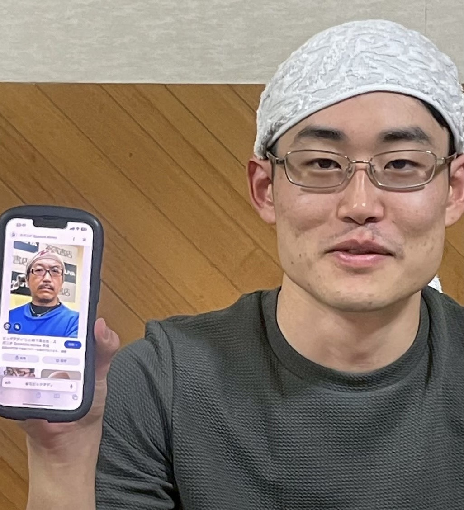

トレーナーデータ
なまえ：西尾 敢
役職：ポケモンマスター
とくいわざ：小手投げ
でんき
ノーマル
メッセージ
西尾先輩へ 西尾先輩ほど俺らの立場で考えてくれる先輩はいません！そう断言出来るほどに、同じ視点で、物事を考えてくれました。西尾先輩だけが4年生の中で唯一、俺らの立場で考えてくれた時がありました。 あの時は本当に助かりました。 本当にありがとうございます。 西尾先輩とは、また会えるという確信があまりにありすぎて悲しさは無いです、また修練しましょ！！飯にも行きましょ！！てか焼き鳥食べましょ！！お願いします！！セセリ食べたい！！ 西尾先輩には沢山迷惑をかけてしまったと思いますが、それでもいつも笑顔で俺らに接してくれたことは本当にすごいと思います。 自分で言うのもあれですが、俺は非常にきしょいやつで俺みたいな後輩がいたら俺は嫌です普通に。なのに嫌な顔ひとつせずに接してくれました。本当にありがとうございました！ これからもよろしくお願いします！！ お仕事上手くいかなかったら、飲みに行きましょうね！上手くいってももちろんいきます！！ 修練にも、最初だけじゃなくてずっとずっと来てくださいね！ 楽しみに待ってます！！